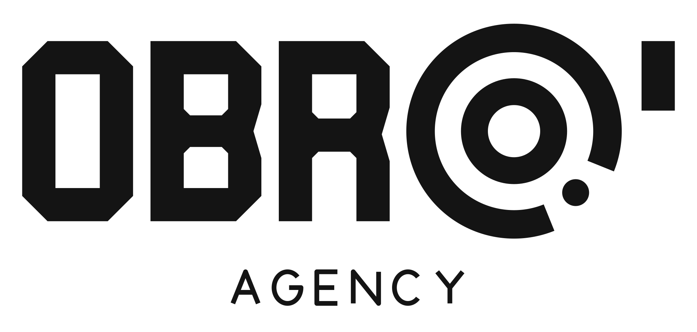

Agentlik ichki tizimi va mijoz kabineti: rollar, modullar, mijozga nima ko‘rinadi, ma’lumotlar modeli, API, xavfsizlik, brend va bosqichlar.
Versiya1.0 · 2026-yil 25-oktabr
TexnologiyaReact + Django REST Framework
AsosTijoriy taklif (Basic / Standard / Premium), brendbuk
HolatMuhokama uchun. Ochiq savollar 13-bo‘limda
Qisqacha
Nima quramiz va nega
OBRO’ Panel — bitta veb-tizim, ikki tomoni bor. Agentlik ichida u CRM: mijozlar, tariflar, kontent reja, vazifalar, kunlik ish jurnali, to‘lovlar va maosh. Mijoz uchun u kabinet: agentlik bugun nima qilgani, qaysi video joylangani, obunachi va lidlar qanday o‘sayotgani, qancha to‘langani shu yerda ko‘rinadi.
Nega hozir kerak. Yangi tijoriy taklifning 9-betida mijozga va’da berilgan: «Bajarilayotgan barcha ishlar va hisobotlarni CRM tizimida istalgan vaqtda ko‘rib turasiz». Bu va’da tizim tayyor bo‘lgandagina ishlaydi. Undan tashqari, foizli maosh har to‘lovdan avtomatik hisoblanishi kerak. Excel’da buni xatosiz yuritish qiyin.
Bu sessiyada qabul qilingan qarorlar
1
Har bir xodimga shaxsiy login. Har kim o‘z ishini o‘zi kiritadi (saytda, keyinroq Telegram botda ham). SMM menejer tekshiradi, keyin yozuv mijozga ko‘rinadi.
2
Fiks oylik bekor. Maosh har loyiha to‘lovidan foizda: SMM menejer (SMM + target) — 20%, videograf-mobilograf — 12,5%, dizayner-montajyor — 12,5%. Jami 45%. Foizlar tizim sozlamasida o‘zgartiriladi.
3
Basic mijozga ham panel ochiladi, lekin qisqa ko‘rinishda. Standard va Premium to‘liq panel oladi. Tijoriy taklif matnini shunga moslab yangilash kerak.
4
Ko‘rsatkichlar avval qo‘lda kiritiladi. Obunachi, qamrov va lidlarni SMM menejer haftasiga bir marta kiritadi. 2-bosqichda Instagram/Meta API ulanadi.
5
Logo va ranglar — brendbukdan. OBRO’ Agency brendbuki tayyor (oltin #FFB81C, qora #141414, Unbounded / Manrope / JetBrains Mono). Yangi logo chizilmaydi. CRM interfeysi brendbukka moslanadi (11-bo‘lim).
Rollar
8
4 ichki, 2 tashqi, 2 mijoz
Modullar
12
hammasi MVP’da, ayrimlari qisqa
MVP
~7 hafta
1 dasturchi; 2 kishi bo‘lsa ~5 hafta
Pilot
2 mijoz
Xonim uz va Vertobro klinikasi
Mundarija
01Boshlang‘ich ma’lumotlar
02Rollar va ruxsatlar
03Ish qanday oqadi
04Modullar
05Mijoz paneli
06Ma’lumotlar modeli
07API tuzilishi
08Loyiha strukturasi
09Xavfsizlik
10fin-space’dan nima olamiz
11Brend: logo, rang, shrift
12Bosqichlar va muddatlar
13Ochiq savollar
14Keyingi qadamlar
01 · Boshlang‘ich ma’lumotlar
Tizim nimaga tayanadi
Tarif nomlari, narxlari va tarkibi 2026-yil 25-oktabrdagi «OBRO Agency — Tijoriy taklif» faylidan olindi. Eski Start / Plus / Max (7 / 14 / 22 mln so‘m) va fiks oylik endi ishlatilmaydi. Shuning uchun tizimga hech qanday narx yoki nom qattiq yozilmaydi. Hammasi sozlamadan o‘zgaradi, eski oylar tarixi esa saqlanib qoladi.
Tariflar (oylik paket «Smart Start»)
Tarkib
Basic
Standard
Premium
Narx
$800 / oy
$1000 / oy
$1500 / oy
Post dizayni va matn
4
6
10
Stories
15
20
20
Reels
10
12
15
Profil bilan ishlash
—
Optimallashtirish
Profil va brend tahlili
Target reklama sozlamalari
bor
bor
bor
1 oylik kontent-reja
bor
bor
bor
Bonus
qisqa panel*
Studiya + CRM
Studiya + CRM
* Taklifda Basic’ga CRM yozilmagan. Bu sessiyada Basic’ga ham qisqa panel berishga qaror qilindi, taklif matnini yangilash kerak. Reklama budjeti har bir tarifda alohida kelishiladi va paket narxiga kirmaydi.
Qo‘shimcha xizmatlar (alohida kelishuv asosida)
Video suratga olish (lokatsiya, uskuna), model yoki brendfeys, lokatsiya tanlash, qo‘shimcha ishlab chiqarish (dizayn, animatsiya, 3D). Tizimda ular «xizmat» sifatida turadi: nomi, o‘lchov birligi (soat, video, kun, dona) va kelishilgan narx. Narx har safar hisob-fakturada qo‘lda kiritilishi ham mumkin. Ta’lim markazlari uchun «Sotuv tizimi» yangi taklifda yo‘q. U ham xizmat sifatida qo‘shilishi mumkin (13-bo‘lim, 14-savol).
Jamoa tuzilishi
Lavozim (maosh uchun)
Kim qiladi
Ulush
Izoh
SMM menejer
SMM + target reklama
20%
Mijoz bilan asosiy aloqa, kontent reja, tekshiruv, hisobot
Videograf-mobilograf
1 kishi
12,5%
Kamera va telefonda suratga olish
Dizayner-montajyor
1 kishi
12,5%
Post dizayni, cover, montaj
Brendfeys
tashqi
dona
Video yoki soat bo‘yicha (oldin 150 ming/video, 200 ming/soat)
Frilanser (yordamchi)
tashqi
dona
Ish hajmi oshganda, vazifa bo‘yicha
Jamoaga jami
45%
Har bir loyihadan
Tizimda «lavozim» va «ruxsat roli» alohida saqlanadi. Bir kishiga ikki lavozim berilishi mumkin (masalan, videograf + mobilograf). Ertaga ular ikki kishiga ajralsa, faqat sozlama o‘zgaradi.
Maosh qanday hisoblanadi — misol
Loyiha narxi
SMM 20%
Video-mobilo 12,5%
Dizayn-montaj 12,5%
Jamoaga 45%
Agentlikka 55%
Basic · $800
$160
$100
$100
$360
$440
Standard · $1000
$200
$125
$125
$450
$550
Premium · $1500
$300
$187,50
$187,50
$675
$825
Masalan, SMM menejerda 1 Basic, 2 Standard va 1 Premium bo‘lsa: 160 + 200 + 200 + 300 = $860. Agentlik ulushidan (55%) keyin soliq, ijara, brendfeys va boshqa xarajatlar chiqadi.
Sozlanadigan qoidalar — uch daraja
Umumiy qoida: lavozim → foiz (20 / 12,5 / 12,5). Hamma loyihaga qo‘llanadi.
Tarif bo‘yicha (ixtiyoriy): masalan, Premium’da dizaynga 15%.
Loyiha bo‘yicha (ixtiyoriy): bitta loyihada ulushni ikki kishiga bo‘lish (10% + 10%) yoki boshqa foiz.
Har qoidaning «amal qilish sanasi» bor. Foiz o‘zgarsa, yangi foiz shu sanadan boshlab ishlaydi. O‘tgan oylar qayta hisoblanmaydi. Asos qaysi summa bo‘lishi (to‘langan yoki shartnoma summasi) va dollar–so‘m kursi ochiq savol (13-bo‘lim).
02 · Rollar va ruxsatlar
Kim nimani kiritadi, kim nimani ko‘radi
Rol
Kim
Asosiy vazifasi tizimda
Super admin
Ozodbek (texnik), zaxira — 1 ta’sischi
Hamma narsa + tizim sozlamalari, rollar, foydalanuvchilar, audit. 2 kishidan oshmaydi, ikki bosqichli kirish (2FA) majburiy.
Rahbar
Mirzohid, Abdulaziz
Mijoz, shartnoma, tarif, to‘lov, xarajat, maosh tasdig‘i, agentlik foydasi. Xodim va mijoz akkauntini ochadi.
SMM menejer
SMM + target
O‘z mijozlari bo‘yicha kontent reja, vazifa, tekshiruv, mijozga yuborish, ko‘rsatkich, reklama va lidlar. Jamoa ish jurnalini tasdiqlaydi.
Ijodkor
Videograf-mobilograf, dizayner-montajyor
O‘z vazifalari, fayl yuklash, o‘z ish jurnali, suratga olish jadvali, o‘z maosh hisobi.
Frilanser
Vaqtinchalik yordamchi
Faqat o‘ziga berilgan vazifa va fayl yuklash. Muddati tugasa akkaunt o‘chadi.
Brendfeys
Tashqi
Saytga login shart emas. Telegram bot orqali suratga olish kunlari haqida xabar oladi. Ishtiroki va haqi rahbar tomonidan qayd etiladi.
Mijoz (egasi)
Biznes egasi yoki direktor
O‘z kompaniyasining paneli: kalendar, tasdiqlash, hisobot, to‘lovlar.
Mijoz xodimi
Marketolog, administrator
Egasi taklif qiladi. To‘lovlarni ko‘rmaydi (egasi ruxsat bersa ko‘radi). 2-bosqich
Ruxsatlar jadvali
● to‘liq (kiritadi va o‘zgartiradi) · ◐ faqat o‘ziga tegishli yoki biriktirilgan mijozlar bo‘yicha · ○ faqat ko‘radi · — ko‘rinmaydi
Bo‘lim
Super admin
Rahbar
SMM menejer
Ijodkor
Brendfeys
Mijoz
Foydalanuvchilar, rollar, sozlamalar
●
◐
—
—
—
—
Tariflar va xizmatlar katalogi
●
●
○
—
—
◐
Mijozlar, shartnoma, loyiha
●
●
◐
◐
—
◐
Kontent reja va kalendar
●
●
◐
◐
◐
○
Vazifalar
●
●
◐
◐
—
—
Kunlik ish jurnali
●
●
◐
◐
—
○
Mijoz tasdig‘i
●
●
◐
◐
—
◐
Ko‘rsatkichlar, reklama, lidlar
●
●
◐
○
—
○
To‘lovlar va hisob-fakturalar
●
●
○
—
—
◐
Xarajatlar
●
●
◐
◐
—
—
Maosh va foizlar
●
●
◐
◐
◐
—
Agentlik foydasi va hisobotlari
●
●
—
—
—
—
Audit jurnali
●
○
—
—
—
—
SMM menejer to‘lovlarda faqat holatni ko‘radi (to‘langan / qarz / muddati o‘tgan), summani emas. Ijodkor «Ko‘rsatkichlar»da faqat o‘z loyihalari natijasini ko‘radi, bu motivatsiya beradi. Xarajatlarda xodim faqat so‘rov yuboradi, rahbar tasdiqlaydi. Ruxsatlar rol bo‘yicha beriladi, lekin alohida odamga qo‘shimcha ruxsat berish yoki olib qo‘yish mumkin. Bunday holatda taqiq har doim ustun turadi.
Nega har bir xodimga login beramiz
Kim nima qilgani aniq. Maosh foizi loyihaga biriktirilgan odamga yoziladi. Ish hajmi ham shu odamga yoziladi. Bahsli holatda tarix bor.
SMM menejerga yuk kamayadi. U hammasini o‘zi yozmaydi, faqat tekshiradi va mijozga chiqaradi.
Mijoz real vaqtda ko‘radi. Video yuklangan zahoti tasdiqqa tushadi, kechki xulosa kutilmaydi.
Xodim ketsa xavfsiz. Akkaunt bir tugma bilan o‘chiriladi, umumiy parol almashtirish shart emas, tarix qoladi.
Xodimni qiynamaslik uchun: vazifa «bajarildi» bo‘lganda jurnal yozuvi o‘zi paydo bo‘ladi. Kun oxirida jurnal bo‘sh bo‘lsa, bot eslatadi. 2-bosqichda botda 2 bosishda kiritiladi.
03 · Ish qanday oqadi
Bitta Reels’ning yo‘li
Har bir kontent (post, Reels, stories) bitta kartochka. U holatdan holatga o‘tadi. Har o‘tishda kerakli odamga vazifa va xabar boradi. Mijoz faqat sariq bosqichlarda ishtirok etadi.
Tizim kunlik xulosani yuboradi. Spam bo‘lmasligi uchun kuniga bitta xabar.
Telegram: «Bugun: 4 suratga olindi, 1 joylandi»
04 · Modullar
12 modul: nima qiladi, kim ishlatadi
Belgilar: MVP birinchi versiyada · 2-bosqich · 3-bosqich. Bitta modulning bir qismi MVP’da, qolgani keyin bo‘lishi mumkin.
M1Mijozlar, shartnoma va loyihaMVP
Vazifasi
Mijoz kartochkasi: soha (klinika, ta’lim, restoran…), kontaktlar, ijtimoiy tarmoq akkauntlari, holat (lid → faol → to‘xtatilgan → ketgan). Loyiha = mijoz + tarif obunasi: boshlanish sanasi, to‘lov kuni, narx (o‘sha kundagi tarif narxi qotiriladi), chegirma, qo‘shimcha xizmatlar, jamoa biriktirish (kim, qaysi lavozimda, necha foiz).
Kim kiritadi
Rahbar. SMM menejer kontaktlarni tahrirlaydi.
Ekranlar
Mijozlar ro‘yxati (filtr: tarif, holat, qarz), mijoz kartochkasi (tablar: umumiy, loyiha, kontent, to‘lovlar, hujjatlar), shartnoma fayli.
Keyin
Shartnoma PDF’ini shablondan yaratish 2, potensial mijozlar voronkasi (audit → uchrashuv → taklif → shartnoma) 3.
M2Tariflar va xizmatlar katalogiMVP
Vazifasi
Tarif: nomi, narxi, valyutasi, oylik limitlar (post, stories, reels), tuzatishlar soni, panel bo‘limlari (Basic qisqa, Standard/Premium to‘liq). Narx va limitlar versiyali: yangi narx kiritilsa, eski loyihalar eski narxda qoladi. Xizmatlar: suratga olish, brendfeys, lokatsiya, qo‘shimcha ishlab chiqarish.
Kim kiritadi
Rahbar yoki super admin.
Nega muhim
Tariflar bir haftada ikki marta o‘zgardi (so‘mdan dollarga, nomlari ham). Kodga hech narsa qattiq yozilmaydi.
M3Kontent reja va kalendarMVP
Vazifasi
Mijoz bo‘yicha oylik kalendar. Kontent kartochkasi: tur, mavzu, matn, rejalashtirilgan sana, holat, platforma, havola, fayllar va versiyalar. Suratga olish kunlari (sana, joy, kim qatnashadi, brendfeys). Limit hisoblagichi: rejaga nisbatan qancha bajarildi.
Kim kiritadi
SMM menejer rejani tuzadi. Ijodkorlar fayl yuklaydi.
Ekranlar
Oylik kalendar (rangli holatlar), kanban (holatlar bo‘yicha ustunlar), suratga olish jadvali.
Keyin
Oy boshida rejani mijoz bir tugmada tasdiqlashi 2, studiya bron qilish kalendari 3.
M4VazifalarMVP
Vazifasi
Kontentdan avtomatik yoki qo‘lda yaratiladigan vazifa: kimga, qaysi mijoz, muddat, holat, izohlar, fayl. «Mening vazifalarim» — xodimning bosh ekrani (bugun, ertaga, muddati o‘tgan).
Kim kiritadi
SMM menejer yaratadi, ijodkor bajaradi.
Keyin
Muddatni uzaytirish so‘rovi, xodim yuklamasi (kimda nechta vazifa bor) 2.
M5Kunlik ish jurnaliMVP
Vazifasi
«Bugun nima qilindi» lentasi. Yozuv: sana, xodim, mijoz, ish turi (suratga olish, montaj, dizayn, joylash, stories, target, hisobot, uchrashuv, boshqa), soni, havola, izoh, manba (avto / qo‘lda / bot), holat (ichki → tasdiqlangan → mijozga ochiq).
Kim kiritadi
Har bir xodim o‘zi, ko‘p qismi avtomatik. SMM menejer tasdiqlaydi.
Foydasi
Mijoz uchun shaffoflik, rahbar uchun nazorat, maosh tahlili uchun ish hajmi.
M6Mijoz tasdig‘iMVP
Vazifasi
Video, dizayn yoki matnni mijozga yuborish. Mijoz brauzerda yoki telefonda ko‘radi va ikki tugmadan birini bosadi: «Tasdiqlayman» yoki «Izoh qoldirish» (izohda vaqt belgisi qo‘yiladi: «0:12 dagi yozuvni o‘zgartiring»). Har bir versiya saqlanadi. Tuzatishlar soni tarif limiti bilan solishtiriladi.
Muddat
Mijoz 48 soat ichida javob bermasa, SMM menejerga eslatma boradi. Avtomatik tasdiq qoidasi shartnomaga yozilsa, sozlamadan yoqiladi (ochiq savol).
M7Ko‘rsatkichlar, reklama va lidlarMVP · qo‘lda
Vazifasi
Akkaunt ko‘rsatkichlari (haftalik): obunachilar, qamrov, ko‘rishlar, profilga tashrif, faollik (ER). Har bir kontent natijasi: ko‘rish, layk, izoh, saqlash, ulashish. Reklama: kampaniya, sarf, ko‘rsatish, bosish, lidlar soni, lid narxi (CPL).
Kim kiritadi
SMM menejer, MVP’da haftada bir marta qo‘lda. Kiritish shakli 3 daqiqalik qilib quriladi.
Keyin
Instagram Graph API va Meta Marketing API orqali avtomatik tortish 2. Lidlar ro‘yxati va ularning holati (yangi → bog‘lanildi → sotildi), mijoz o‘zi belgilaydi 2. Sotuv tizimi (ta’lim) moduli 3.
M8To‘lovlar, hisob-faktura va qarzdorlikMVP
Vazifasi
Har oy loyiha bo‘yicha hisob-faktura qoralamasi avtomatik yaratiladi (tarif + qo‘shimcha xizmatlar). Rahbar «chiqarildi» qiladi, mijozga xabar boradi. To‘lov qayd etiladi: summa, valyuta, kurs (Markaziy bank kursi avtomatik olinadi), usul (naqd, karta, bank o‘tkazmasi), qaysi kassaga yoki hisobga tushgani. Qisman to‘lov, avans (bir necha oy oldindan) bo‘lishi mumkin. Holat avtomatik hisoblanadi: ochiq / qisman / to‘langan / muddati o‘tgan.
Qarzdorlik
Mijoz bo‘yicha qoldiq va kechikish kunlari. Eslatmalar: muddatdan 3 kun oldin, muddat kuni, 3 kun keyin (mijozga), 7 kun keyin (rahbarga).
Reklama budjeti
Agentlik daromadi emas. Agar u agentlik orqali o‘tsa, «tranzit» deb belgilanadi: foydaga ham, maosh foiziga ham kirmaydi.
Keyin
Click / Payme orqali onlayn to‘lov, elektron hisob-faktura (Didox, Faktura.uz) 3.
M9Maosh (foizli) va bonusMVP
Vazifasi
Maosh qoidalari (3 daraja, 01-bo‘limga qarang). Mijoz to‘lovi qayd etilganda biriktirilgan har xodimga hisoblanma yoziladi: «Standard $1000 dan 20% = $200». Oy oxirida hisoblanmalar vedomostga yig‘iladi: qoralama → tekshirildi → tasdiqlandi → to‘landi. Brendfeys va frilanser dona bo‘yicha. Avans, bonus va jarima izoh bilan kiritiladi.
Kim ko‘radi
Xodim faqat o‘zinikini ko‘radi: qaysi loyihadan, qancha, qachon to‘langan. Foizlarni va boshqalar maoshini faqat rahbar ko‘radi.
Keyin
KPI bo‘yicha bonus (masalan, muddat buzilmasa +5%), vedomostni Excel’ga chiqarish 2.
M10Xarajatlar va agentlik foydasiMVP · oddiy
Vazifasi
Xarajat: kategoriya (ijara, uskuna, dasturlar, o‘z reklamamiz, brendfeys, frilanser, transport, soliq, boshqa), summa, valyuta, sana, qaysi kassadan, chek surati. Ixtiyoriy ravishda loyihaga bog‘lanadi. Oylik foyda: tushum − jamoa ulushi − xarajatlar − soliq = sof foyda va har sherikka ulush.
Keyin
Xodim Telegram orqali xarajat so‘rovi yuboradi, rahbar tasdiqlaydi 2. Virtual ajratmalar 2: har to‘lovdan jamoa ulushi va soliq «ajratib» ko‘rsatiladi, «erkin pul» alohida chiqadi (fin-space g‘oyasi). Loyiha rentabelligi, reja/fakt 3.
M11Bildirishnomalar va Telegram botMVP · xabarlar
Mijozga
Tasdiq kutayotgan material, kunlik xulosa (kuniga bitta), hisob-faktura chiqdi, to‘lov muddati, oylik hisobot tayyor.
Xodimga
Yangi vazifa, muddat ertaga, mijoz izoh qoldirdi yoki tasdiqladi, «bugungi ishni kiriting» eslatmasi, maosh hisoblandi.
Rahbarga
Har kuni 9:00 da xulosa: qarzdorlar, muddati o‘tgan vazifalar, tasdiq kutayotganlar, limitdan orqada qolgan loyihalar.
Ulash
Profilda «Telegram’ni ulash» tugmasi. Bot bir martalik havola orqali akkauntni taniydi. Bot faqat API orqali ishlaydi, bazaga to‘g‘ridan-to‘g‘ri kirmaydi.
O‘zgarmas audit jurnali: pul, ruxsat, tasdiq va maosh qoidasi o‘zgarishlari (kim, qachon, oldin → keyin, sabab). Oyni yopish: yopilgan oy summalarini faqat rahbar o‘zgartiradi. Sozlamalar: kompaniya rekvizitlari, valyuta, ish kunlari, eslatma vaqtlari. Tizim ichida «Yordam» bo‘limi va «Yangiliklar» sahifasi: har o‘zgarish bilan yangilanadi.
05 · Mijoz paneli
Mijozga nima ko‘rinadi, nima yashirin
Ko‘rinadi
Tarif, shartnoma muddati, keyingi to‘lov sanasi
Oylik limit halqalari: Reels 8/12, Post 4/6, Stories 14/20 va «reja bo‘yicha me’yorda / orqada»
Kontent kalendari: rejalashtirilgan va joylangan, havolalari bilan
Tasdiq kutayotgan materiallar (video, dizayn, matn)
Kunlik ish jurnali — faqat tasdiqlangan yozuvlar
Ko‘rsatkichlar: obunachi dinamikasi, qamrov, eng yaxshi postlar
Reklama: sarf, lidlar soni, lid narxi
Hisob-fakturalar, to‘langan va qarz, kvitansiya
Suratga olish kunlari va mas’ul SMM menejer kontakti
Oylik hisobot (PDF) va hujjatlar (shartnoma)
«So‘rov yuborish»: yangi aksiya, tezkor post, savol
Yashirin (hech qachon chiqmaydi)
Xodimlar maoshi, foizlar, agentlik foydasi va xarajatlari
Ichki izohlar va jamoa muhokamasi
Tasdiqlanmagan jurnal yozuvlari va qoralamalar
SMM menejer tekshirmagan versiyalar
Xom fayllar (raw), agar alohida ochilmasa
Xodim samaradorligi, kechikish sabablari
Boshqa mijozlar haqida har qanday ma’lumot
Agentlik ichki sozlamalari va audit jurnali
Kurs farqi va chegirma hisob-kitobi
Texnik qoida: mijoz paneli alohida API qismidan (/api/v1/portal/) ma’lumot oladi. U yerdagi har bir javob «oq ro‘yxat» asosida tuziladi: faqat ruxsat etilgan maydonlar chiqadi. Ichki maydon tasodifan chiqib ketmaydi.
Tarif bo‘yicha panel bo‘limlari
Bo‘lim
Basic
Standard
Premium
Bosh sahifa: tarif, limit halqalari, keyingi to‘lov
●
●
●
Kontent kalendari
●
●
●
Materiallarni tasdiqlash
●
●
●
Oylik hisobot (PDF)
●
●
●
To‘lovlar va hisob-fakturalar
●
●
●
Kunlik ish jurnali
—
●
●
Ko‘rsatkichlar (haftalik grafik)
oylik hisobotda
●
●
Reklama va lidlar
oylik hisobotda
●
●
SMM menejerdan haftalik tahlil izohi
—
—
●
So‘rov yuborish
●
●
● ustuvor
Mijoz xodimini qo‘shish 2
—
1 kishi
3 kishi
Bu taklif. Bo‘limlar tarif sozlamasida yoqiladi va o‘chiriladi, kodni o‘zgartirish shart emas. Basic’dagi yopiq bo‘limlar panelda qulf belgisi bilan ko‘rinadi: «Standard’da ochiladi». Bu yuqori tarifga o‘tishga sabab bo‘ladi.
05 · Mijoz paneli · eskiz
Bosh sahifa (Standard mijoz, telefon va kompyuterda)
Bosh sahifa
Kalendar
Tasdiqlash2
Bugun nima qilindi
Ko‘rsatkichlar
Reklama va lidlar
To‘lovlar
Hisobotlar
So‘rov yuborish
Mas’ul SMM menejer Ism Familiya @telegram
Assalomu alaykum!
Namuna klinika · Standard · noyabr
Keyingi to‘lov: 1-dekabr · $1000
Bu oy bajarilishi
Reels
Post
Stories
Reja bo‘yicha me’yordaoyning 60% o‘tdi, 64% bajarildi
Tasdiqlash kutmoqda · 2
Reels: «Shifokor maslahati»
Ko‘rish
Post: «Noyabr aksiyasi»
Ko‘rish
Obunachilar
12 480 +640
Qamrov · 7 kun
48,2k +18%
Lidlar · oy
46 target
Lid narxi
$1,85 sarf $85
Bugun nima qilindi
18:30Joylandi: Reels «Davolanish 3 bosqichda» · havola
16:05Siz tasdiqladingiz: Reels «Navbatsiz qabul»
15:40Target: 2 ta yangi kreativ ishga tushirildi
10:00Suratga olindi: 4 Reels uchun material
Obunachilar · 8 hafta
Oylik hisobot PDFSo‘rov yuborish
Raqamlar va nomlar namuna. Tarif halqalari brendbukdagi «uzilgan halqa» elementidan olingan. Telefonda menyu pastga panel bo‘lib tushadi, kartochkalar ustma-ust joylashadi.
Xodimning bosh ekrani (qisqa)
«Bugun» ro‘yxati: vazifalar (bugun, ertaga, muddati o‘tgan), tasdiqdan qaytgan izohlar, suratga olish kunlari, «jurnalga qo‘shish» tugmasi va shu oy hisoblangan ulushi (faqat o‘ziniki). Rahbarning bosh ekrani: tushum va qarz, tasdiq kutayotganlar, orqada qolgan loyihalar, jamoa yuklamasi, oylik foyda.
06 · Ma’lumotlar modeli
Asosiy jadvallar va bog‘lanishlar
Markazda Loyiha (mijoz + tarif obunasi). Kontent, vazifa, to‘lov, maosh va ko‘rsatkichlar shunga bog‘lanadi.
Strelka — «bog‘langan». Xodim loyihaga «biriktirish» orqali ulanadi (lavozim va foiz shu yerda). Uzuq chiziq: ish jurnali yozuvi xodimga ham bog‘lanadi. To‘lov qayd etilganda hisoblanma yaratiladi. Xarajat ixtiyoriy ravishda loyihaga bog‘lanadi.
Jadvallar (Django ilovalari bo‘yicha)
Ilova
Jadval
Asosiy maydonlar
accounts
User
telefon / email, parol (Argon2), ism, holat, telegram_chat_id, oxirgi kirish
Role, Permission
rol → ruxsatlar to‘plami; UserPermissionOverride: ruxsat / taqiq
mijoz, summa, valyuta, kurs, so‘mdagi summa, usul, kassa, sana; qaysi hisob-fakturaga qancha
Account, Expense, ExpenseCategory
kassa / karta / bank; xarajat: kategoriya, summa, valyuta, kurs, kassa, loyiha, chek
payroll
CompensationRule
lavozim, asos (to‘lovdan % / dona / fiks), qiymat, tarif yoki loyiha (ixtiyoriy), amal qilish sanasi
Accrual, Adjustment
xodim, loyiha, manba to‘lov, summa, valyuta, kurs, holat; avans / bonus / jarima va sababi
PayrollSheet, Payout
oy, holat (qoralama → tasdiqlandi → to‘landi), jami; to‘lov: xodim, summa, usul, sana
notifications
Notification, TelegramLink
kimga, tur, kanal, yuborildi / o‘qildi; bir martalik ulash tokeni
core
AuditLog, Attachment
kim, amal, obyekt, oldin / keyin (JSON), sabab; fayl: kalit, tur, hajm, egasi, ko‘rinishi
Pul qoidalari (o‘zgarmas): summalar faqat Decimalda, float hech qachon ishlatilmaydi. Har bir pul yozuvida valyuta bor. Dollar to‘lovida o‘sha kungi kurs yozib qo‘yiladi va keyin o‘zgarmaydi. To‘lov va xarajat o‘chirilmaydi, faqat sabab yozilib bekor qilinadi. Hisob-kitob funksiyalari (foiz, qarz, foyda) bitta joyda turadi va har biriga test yoziladi.
07 · API tuzilishi
REST API: /api/v1/
Ikki qism: ichki API (jamoa va rahbar uchun) va portal API (faqat mijoz uchun, alohida serializerlar bilan). Hujjat avtomatik chiqadi (OpenAPI, /api/docs/). Frontend uchun TypeScript turlari shu hujjatdan yaratiladi.
Sentry (xatolar), uptime tekshiruvi, kunlik zaxira
Xatoni mijozdan oldin ko‘rish
Video saqlash bo‘yicha qaror. Xom materiallar tizimga yuklanmaydi (Google Drive havolasi yetadi). Tizimga faqat tayyor versiya yuklanadi (300 MB gacha). Joylanganidan 90 kun o‘tgach fayl o‘chadi, Instagram havolasi qoladi. Taxminiy hajm: 10 mijoz × 25 video × 80 MB ≈ 20 GB/oy.
09 · Xavfsizlik
Ma’lumot kimga tegishli bo‘lsa, faqat o‘sha ko‘radi
Kirish
Har kimga shaxsiy login. Umumiy parol yo‘q.
Parollar Argon2 bilan saqlanadi, kamida 10 belgi.
5 marta xato kiritilsa — 15 daqiqa blok.
Super admin va rahbarga 2FA (ilova kodi) MVP, boshqalarga 2.
Qisqa muddatli access token, refresh token HttpOnly cookie’da.
Xodim ketsa: bir tugma bilan o‘chiriladi, barcha sessiyalari bekor qilinadi.
Ruxsat
Har so‘rov backendda tekshiriladi. Frontend faqat tugmani yashiradi, himoya backendda.
Obyekt darajasida: xodim faqat biriktirilgan loyihalarni, mijoz faqat o‘z kompaniyasini ko‘radi.
Majburiy test: «A mijoz B mijoz ma’lumotini ololmaydi», «ijodkor maoshlarni ko‘rmaydi».
Portal javoblari faqat oq ro‘yxatdagi maydonlardan iborat.
Pul va tarix
To‘lov va xarajat o‘chirilmaydi, faqat sabab bilan bekor qilinadi.
Yopilgan oyni faqat rahbar o‘zgartiradi, bu audit jurnaliga yoziladi.
Fayllar yopiq omborda. Havola 15 daqiqa amal qiladi. Fayl turi va hajmi tekshiriladi.
HTTPS, HSTS, CSRF, CORS faqat o‘z domeni uchun, xavfsiz cookie.
Maxfiy kalitlar .envda turadi, repozitoriyga tushmaydi. Prod va test bazalari alohida.
Har kecha bazaning zaxira nusxasi olinadi va 30 kun saqlanadi. Oyiga bir marta tiklash sinab ko‘riladi.
Telegram webhook maxfiy token bilan himoyalanadi.
Shaxsiy ma’lumotlar. O‘zbekiston qonunchiligi bo‘yicha fuqarolarning shaxsiy ma’lumotlari bazasi O‘zbekiston hududidagi serverda saqlanishi talab qilinadi. Tizimda mijoz kontaktlari va lidlar telefonlari bo‘ladi. Shuning uchun serverni O‘zbekistonda tanlash tavsiya qilinadi (buni yurist bilan tasdiqlash kerak). Lid telefonlarini faqat mijoz va biriktirilgan SMM menejer ko‘radi. MVP’da lidlarning faqat soni saqlanadi.
10 · fin-space tahlili
fin-space’dan nima olamiz
github.com/farrukhnosirov/fin-space — Thompson ta’lim xoldingi uchun ichki moliya platformasi («Thompson Finance Platform»). Stek: Next.js 15, NestJS, Prisma, PostgreSQL, Redis/BullMQ, MinIO, grammY bot. Repozitoriyda 149 ta commit bor. Ruscha interfeys, 23 ta modul hujjati, Prisma sxemasida 173 ta model.
Litsenziya. Repozitoriyda LICENSE fayli yo‘q, package.jsonlarda ham litsenziya ko‘rsatilmagan. Bu holatda barcha huquqlar muallifda qoladi: kodni ruxsatsiz ko‘chirib bo‘lmaydi. Undan tashqari, stek boshqa (TypeScript/NestJS, bizda Python/Django). Shuning uchun kod emas, g‘oya va tuzilma olinadi. Biror qismni so‘zma-so‘z olish kerak bo‘lsa, Farrukh Nosirovdan yozma ruxsat so‘rash kerak (Mirzohid Thompson’da ishlagani uchun aloqa oson bo‘lishi mumkin).
fin-space g‘oyasi
OBRO’ Panel’da qanday ishlatamiz
Qachon
Pul qoidalari: Decimal, har yozuvda valyuta, kurs operatsiya kunida saqlanadi, hisob funksiyalari bitta paketda va testlangan
common/calc/: foiz, qarz, foyda funksiyalari, har biriga test
MVP
Yagona operatsiyalar jurnali, hisobotlar shundan quriladi
To‘lov va xarajat — yagona manba. Foyda va qarz hisobotlari ulardan hisoblanadi, alohida qo‘lda yozilmaydi.
MVP
Rol + shaxsiy ruxsat (ruxsat / taqiq, taqiq ustun), modulga kirish ruxsati
Xuddi shu sxema. Kompaniya va filial o‘rnida loyiha biriktirish.
MVP
O‘zgarmas audit (oldin / keyin JSON, sabab), yopilgan davrni himoya qilish
AuditLog va «oyni yopish»
MVP
Vedomost holatlari (qoralama → tekshirildi → tasdiqlandi → to‘landi), xodim nomini qatorga «suratga olish»
PayrollSheet va Accrual. Xodim ma’lumoti o‘zgarsa, eski oy buzilmaydi.
MVP
Maosh shartlari tarixi (amal qilish sanasi bilan)
CompensationRule versiyalari: 20 / 12,5 / 12,5 o‘zgarsa, tarix saqlanadi
MVP
Kontragent majburiyatlari: muddat tarixi, avans va zachyot, holat avtomatik
Hisob-faktura holati, avans to‘lovini bir necha oyga taqsimlash, muddat o‘zgarishi tarixi
MVP
Telegram bot faqat API orqali; so‘rovlar oqimi (yangi → ko‘rib chiqish → aniqlashtirish → tasdiq / rad → operatsiyaga aylantirish)
Bot arxitekturasi; xarajat so‘rovlari va jurnal kiritish shu oqimda
2
Virtual rezervlar: «jismoniy qoldiq ≠ sarflash mumkin bo‘lgan qoldiq»
Har to‘lovdan jamoa 45% va soliq ajratiladi, «erkin pul» alohida ko‘rinadi
2
Kassa va sverka (haqiqiy qoldiq bilan solishtirish, kamomad yoki ortiqcha sabab bilan)
Eski Excel’dagi mijoz va to‘lovlarni bir martada ko‘chirish
2
Ichki hujjat va «Yangiliklar» sahifasi, har o‘zgarish bilan yangilanadi
docs/ va «Yangiliklar» sahifasi; ishlab chiquvchi uchun qoida
MVP
Rang ma’nosi: qizil — xavf / muddati o‘tgan, yashil — to‘langan, sariq — kutilmoqda
Saqlanadi, lekin «kutilmoqda» uchun to‘q sariq (oltin brendniki, 11-bo‘lim)
MVP
Sozlanadigan dashboard (plitka tartibi va o‘lchami)
Rahbar bosh ekrani uchun
3
Olinmaydi: xolding, kompaniya, filial va yuridik shaxslar ierarxiyasi, investorlar va ulushlar, egasining shaxsiy moliyasi, umumiy xarajatlarni filiallarga taqsimlash, maktab rejalashtirish, AI agentlar. Bular hozir agentlik uchun ortiqcha murakkablik.
11 · Brend
Logo, ranglar va shriftlar
«OBRO’ Agency Brandbook» (2026) tayyor va yangi tijoriy taklif ham shu uslubda. CRM uchun yangi logo chizilmaydi, mavjud brend interfeysga ko‘chiriladi. Eslatma: 21-oktabrdagi katalog v2’dagi to‘q ko‘k (navy) rang endi eskirgan. Asosiy manba — brendbuk.

Ilova belgisi va favicon: oltin belgi, qora kvadrat
Nomi: «OBRO’ Panel». Bitta nom jamoa va mijoz uchun. Mijoz menyusida «Mijoz kabineti». Domen taklifi: panel.obro.agency (domen olingan bo‘lsa).
Menyu: chap panel qora, tepada oq gorizontal logo. Faol bo‘lim oltin nuqta bilan belgilanadi (brendbukdagi «Gold Dot»).
Mijoz paneli sarlavhasi: OBRO’ logo, «|» va mijoz logotipi. Brendbukdagi qo‘sh brending qoidasi: OBRO’ birinchi turadi, balandliklar teng.
Kichik o‘lchamlar: 24 px’dan kichik joyda faqat belgi ishlatiladi (brendbuk: belgi uchun minimal 24 px).
Interfeys ranglari
Gold
#FFB81C Asosiy tugma (qora matn bilan), faol belgi, progress. Matn rangi sifatida oq fonda ishlatilmaydi.
Ink
#141414 Matn, menyu, sarlavhalar, tungi rejim foni
Ivory
#F6F1E7 Sahifa foni. Kartochkalar oq #FFFFFF
Bronze
#8A5E00 Yorug‘ fonda havola va kichik aksent (5,1 : 1 kontrast)
Graphite
#2E2E2E Tungi rejimda kartochka, ikkinchi darajali matn
Yashil
#1F7A4D To‘langan, tasdiqlandi, joylandi
To‘q sariq
#B45309 Kutilmoqda, eslatma (oltindan farqli)
Qizil
#C62828 Muddati o‘tgan, qarz, xato
Yashil, to‘q sariq, qizil, shuningdek ko‘k #2457A6 (jarayonda) va kulrang #6B6760 (qoralama) brendbukda yo‘q. Ular faqat holat belgisi uchun qo‘shiladi va doim yumshoq fonli kichik yorliq ko‘rinishida ishlatiladi. Oltin holat rangi sifatida ishlatilmaydi: u faqat brend aksenti. Nisbat brendbukdagidek: 60% oq va ivory, 30% qora, 10% oltin.
Shriftlar va elementlar
Shrift
Qayerda
Unbounded
Sahifa sarlavhalari, katta KPI raqamlari, bo‘sh holat yozuvlari. Faqat 600–700, kichik o‘lchamda ishlatilmaydi.
Manrope
Butun interfeys matni: menyu, forma, jadval. Asosiy o‘lcham 14 px.
JetBrains Mono
Pul, sana, raqamlar, ID’lar (raqamlar bir xil kenglikda, ustunda tekis turadi).
Nishon belgisi — bo‘sh holat rasmi: «Hozircha tasdiq kutayotgan narsa yo‘q».
Tungi rejim: fon #141414, kartochka #1E1E1E / #2E2E2E, matn #F6F1E7, aksent oltin.
12 · Bosqichlar
Qaysi tartibda va qancha vaqtda
Taxmin: 1 ta full-stack dasturchi to‘liq vaqt ishlaydi va AI yordamidan foydalanadi. Ikkinchi (frontend) dasturchi qo‘shilsa, MVP ~5 haftaga qisqaradi. Boshlanish: 2026-yil 2-noyabr.
Noy 1
Noy 2
Noy 3
Noy 4
Dek 1
Dek 2
Dek 3
Dek 4
Yan 1
Yan 2
Yan 3
Yan 4
Fev 1
Fev 2
Mar
Apr
0 · Tayyorgarlik
1 · MVP
Pilot (2 mijoz)
2 · Avtomatlashtirish
3 · O‘sish
0-bosqich · Tayyorgarlik (1 hafta)
Ochiq savollarga javob (13-bo‘lim). Asosiy 8 ekranning maketi: kirish, rahbar bosh ekrani, mijoz kartochkasi, kalendar, kontent kartochkasi, tasdiqlash, to‘lovlar, mijoz bosh sahifasi. Baza sxemasi, server va domen, repozitoriy, CI (test va lint avtomatik).
1-bosqich · MVP (7 hafta)
Hafta
Nima tayyor bo‘ladi
1
Loyiha skeleti, kirish, rollar va ruxsatlar, foydalanuvchini taklif qilish, audit. Tarif va xizmatlar katalogi (versiyalar bilan).
2
Mijozlar, kontaktlar, shartnoma, loyiha, jamoa biriktirish, maosh qoidalari sozlamasi.
3
Kontent kalendari va kanban, kontent kartochkasi, versiya va fayl yuklash, vazifalar, suratga olish kunlari.
4
Ichki tekshiruv va mijoz tasdig‘i (izoh, versiya, limit), kunlik ish jurnali (avto + qo‘lda + tasdiq).
5
Hisob-faktura (avtomatik qoralama), to‘lov, kurs, qarzdorlik. Foizli hisoblanma va oylik vedomost.
6
Mijoz paneli (bosh sahifa, kalendar, tasdiqlash, jurnal, to‘lovlar, oylik hisobot). Ko‘rsatkich va reklamani qo‘lda kiritish. Xarajatlar va oylik foyda.
7
Telegram bildirishnomalari, ruxsat va pul testlari, serverga chiqarish, zaxira, foydalanuvchi qo‘llanmasi.
MVP tayyor degani
Xonim uz va Vertobro klinikasi uchun bir to‘liq oy shu tizimda yuritildi.
Mijoz Telegram’dagi havola orqali kirib, videoni telefonda tasdiqladi.
Oy oxirida to‘lovlar, qarz va har xodimning ulushi Excel’siz chiqdi.
«A mijoz B mijozni ko‘rmaydi» va «ijodkor maoshlarni ko‘rmaydi» testlari o‘tdi.
Instagram Graph API va Meta Marketing API (ko‘rsatkich, reklama, lidlar avtomatik). Telegram botda ish jurnali, fayl yuborish, xarajat so‘rovi va tasdiqlash. Lidlar ro‘yxati va holati. Oylik PDF hisobot avtomatik. Virtual ajratmalar («erkin pul»), kassa sverkasi. Video preview’ni siqish (ffmpeg). Mobil PWA, hamma uchun 2FA, rus tili, mijoz xodimini qo‘shish, Excel import, shartnoma PDF shabloni.
3-bosqich · O‘sish (6–8 hafta, mart–aprel 2027)
Click / Payme orqali onlayn to‘lov. Elektron hisob-faktura (Didox yoki Faktura.uz). Studiya bron qilish kalendari. Ta’lim markazlari uchun «Sotuv tizimi» moduli. Potensial mijozlar voronkasi (audit → uchrashuv → taklif → shartnoma). Xodim KPI va bonus. Loyiha rentabelligi va reja/fakt. Sozlanadigan dashboard. AI yordamida oylik hisobot xulosasi. Sotuv uchun «keys» havolasi: mijoz roziligi bilan natijalarni ochiq sahifa qilib ko‘rsatish.
13 · Ochiq savollar
Siz hal qiladigan narsalar
Har bir savol yonida tavsiya bor. Javob kelmaguncha tizim shu tavsiya bo‘yicha loyihalanadi. Hammasi sozlamadan o‘zgaradigan qilib quriladi.
Maosh
01
Foiz qaysi summadan olinadi: mijoz haqiqatda to‘lagan summadanmi yoki shartnoma narxidanmi? Mijoz kechiktirsa, xodim ham kutadimi?
Tavsiya: to‘langan summadan, to‘lov kelgan kuni hisoblanadi. Chegirma bo‘lsa, chegirmali summadan.
02
Foiz dollarda hisoblanadi. Xodimga so‘mda qaysi kurs bilan beriladi?
Tavsiya: mijoz to‘lagan kundagi Markaziy bank kursi bilan so‘mga o‘giriladi va shu summa qotiriladi.
03
Brendfeys, frilanser, lokatsiya haqi kimning hisobidan: agentlik ulushidanmi (55%) yoki jamoa ulushidanmi (45%)?
Tavsiya: agentlik ulushidan. Mijozdan qo‘shimcha xizmat sifatida olinsa, o‘sha tushumdan qoplanadi.
04
Bir lavozimda ikki kishi ishlasa yoki yordamchi kerak bo‘lsa, foiz qanday bo‘linadi?
Tavsiya: loyiha darajasida qo‘lda bo‘linadi (masalan, 10% + 10%). Umumiy 45% o‘zgarmaydi.
Mijoz va to‘lov
05
Hisob-faktura oy boshida (oldindan) chiqadimi yoki oy oxirida?
Tavsiya: oldindan, shartnoma imzolangan sana bo‘yicha har oy.
06
Mijoz so‘mda to‘lasa, qaysi kurs olinadi: Markaziy bank, bank kursi yoki kelishilgan qat’iy kurs?
07
Minimal shartnoma muddati (eski katalogda 3 va 6 oy) va tuzatishlar soni (2 / 2 / 3) yangi tariflarda saqlanadimi? Mijoz 48 soatda javob bermasa, kontent avtomatik tasdiqlanadimi?
08
Basic panelida tasdiqlash va to‘lovlar ham bo‘ladimi? Tijoriy taklif matnini kim yangilaydi?
Tavsiya: ha (05-bo‘limdagi jadval). Taklifdagi «CRM — Standard va Premium’da» yozuvini «Basic — qisqa panel, Standard va Premium — to‘liq panel» deb o‘zgartirish kerak.
09
Reklama budjeti mijoz kartasidan Meta’ga to‘g‘ridan-to‘g‘ri to‘lanadimi yoki agentlik orqali o‘tadimi?
Tavsiya: to‘g‘ridan-to‘g‘ri (eski katalogda shunday edi). Agentlik orqali o‘tsa, «tranzit» deb yuritiladi.
10
Lidlarning ism va telefoni tizimda saqlansinmi yoki faqat soni va manbasi?
Tavsiya: MVP’da faqat soni va manbasi. 2-bosqichda to‘liq ro‘yxat, mijoz roziligi bilan.
Tashkiliy
11
Kim dasturlaydi: Ozodbek yolg‘izmi yoki frontend dasturchi qo‘shiladimi?
Muddatlar shunga bog‘liq: 1 kishi bo‘lsa MVP ~7 hafta, 2 kishi bo‘lsa ~5 hafta.
12
obro.agency domeni olinganmi? Server O‘zbekistonda bo‘lsinmi?
Tavsiya: ha, O‘zbekistondagi server (shaxsiy ma’lumot qonuni). Yurist bilan tasdiqlash kerak.
13
Yuridik shaxs mijozlarga rasmiy elektron hisob-faktura (Didox / Faktura.uz) kerakmi?
Kerak bo‘lsa, 3-bosqichdan 2-bosqichga olinadi.
14
Ta’lim markazlari uchun «Sotuv tizimi» xizmat sifatida qoladimi? Yangi taklifda u yo‘q.
15
Rollarni kim oladi: super admin — Ozodbek va yana kim? Abdulaziz qaysi rolda bo‘ladi?
Tavsiya: super admin — Ozodbek (texnik) va Mirzohid (zaxira). Abdulaziz — rahbar.
14 · Keyingi qadamlar
Bu hafta nima qilinadi
Ochiq savollarga javob berish (13-bo‘lim). Eng muhimlari: 01, 02, 05, 11 va 12-savollar.
Tijoriy taklifni yangilash: Basic’ga «qisqa panel» qo‘shiladi va CRM bonusi aniq yoziladi.
Domen va server: obro.agency va O‘zbekistondagi VPS.
Maketlar: 8 ta asosiy ekran (Figma yoki HTML prototip), avval mijoz paneli.
Repozitoriy:obro-panel, 08-bo‘limdagi struktura, CI, hujjat va «Yangiliklar» qoidasi.
Pilotga tayyorgarlik: Xonim uz va Vertobro klinikasi bilan kelishish. Ular birinchi bo‘lib panelga kiradi va fikr beradi.
Asosiy fikr
Tizimning qiymati — mijoz agentlik ishini o‘z ko‘zi bilan ko‘rib turishi va jamoa kim nima qilganini bahssiz bilishi. Shuning uchun MVP’da avval kalendar, tasdiqlash, ish jurnali va to‘lov chiqadi. Ko‘rsatkichlarni avtomatik tortish va bot keyinroq qo‘shiladi.
Manbalar
OBRO Agency — Tijoriy taklif, 11 bet (Telegram Desktop, 2026-yil 25-oktabr) — tariflar va xizmatlar.
OBRO’ Agency Brandbook, 55 bet — logo, ranglar, shriftlar, elementlar.
OBRO’ Xizmatlar katalogi (22-oktabr) va 02_Moliya/Obro_Media_oylik_foyda_3_tarif_v2.pdf — eski tariflar va bosqichli maosh (endi bekor).
Bu sessiyadagi qarorlar: login har kimga; foizli maosh 20 / 12,5 / 12,5; Basic’ga panel; ko‘rsatkichlar avval qo‘lda.